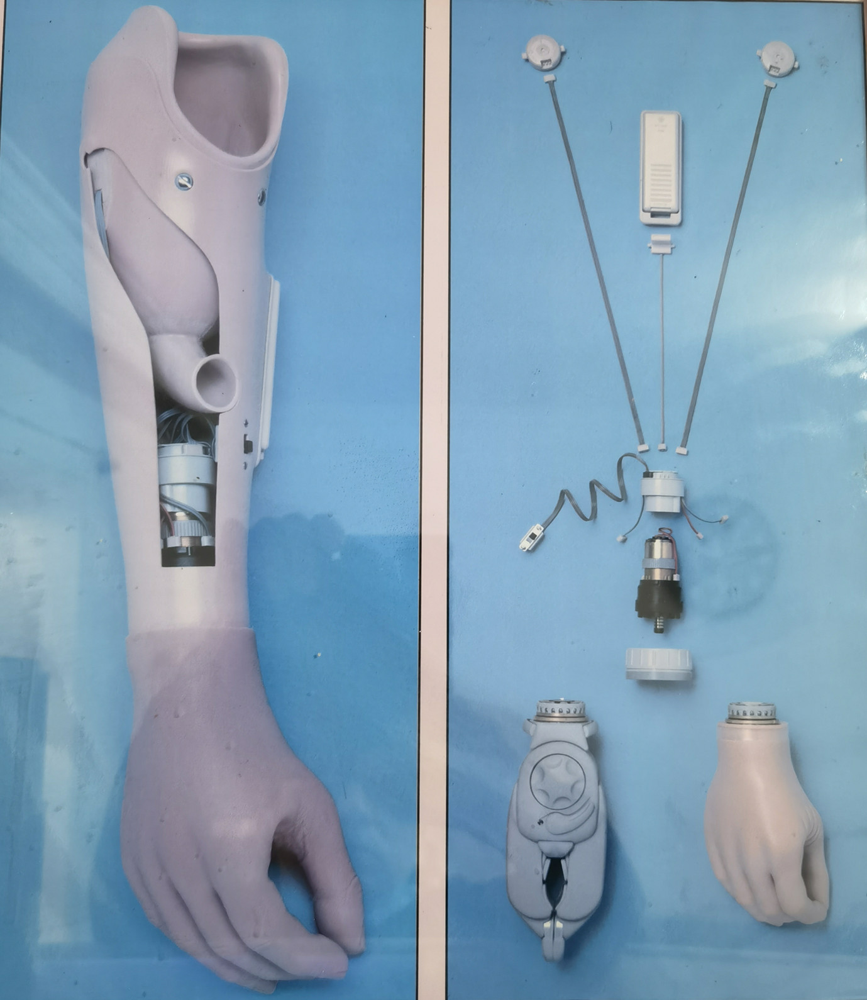
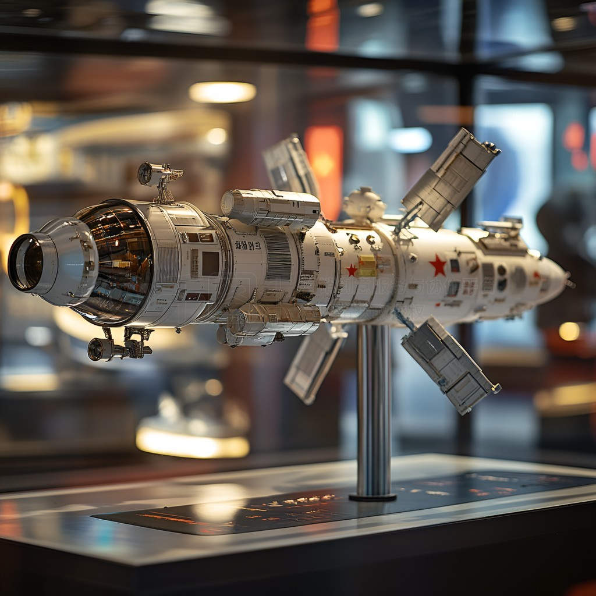
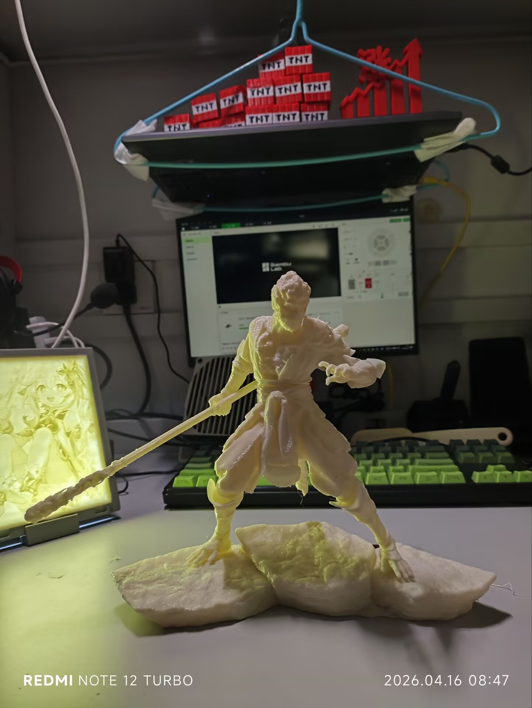
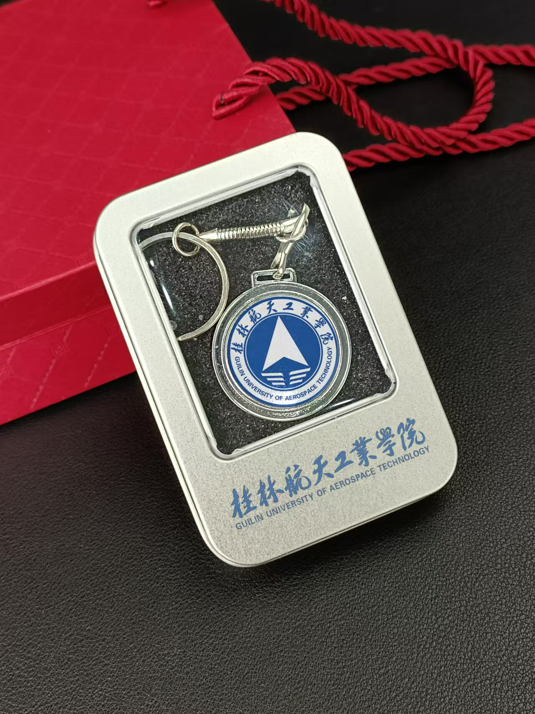
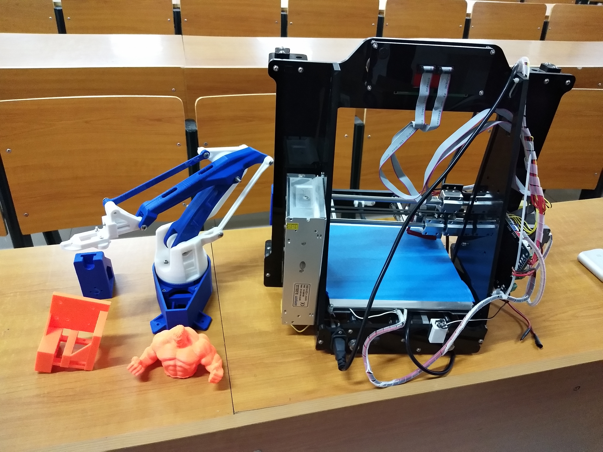

中国残障人士群体规模
AI x 3D Printing x Inclusive Design
让创造回归指尖，
让每个人都能
创造所需。
“印迹”将多模态 AI 生成、可打印性优化与分布式 3D 制造网络打通， 从义肢辅具到校园文创，把高门槛制造变成可被任何人调用的能力。
核心承诺
- 千元级个性化辅具
- 48 小时内完成生产与配送
- 1 件起订，件件不同
- “会说话就会设计”
上肢缺失者潜在服务对象
全国在校大学生创造型消费人群
从数字设计到实物交付目标时效
The Gap
问题不只是设计难，更是制造能力分配不均。
对残障群体
传统义肢定制通常需要 2-5 万元，等待 60 天以上，并且多为成人标准件。对于成长中的儿童， “每年更换一次”意味着价格、时间和尊严的三重压力。
均价 3 万元
制作 45-90 天
贴合与审美长期缺位
对普通创作者
建模工具复杂、加工厂起订量高、校园文创千篇一律，导致大量好创意卡在“不会做”与“做不起”之间。 这背后是一个被忽略的千亿级消费市场。
2973 所高校
起订量常见 1000 件
毕设与社团定制需求高频爆发

核心判断
制造能力的不平等，是最大的创造不平等。
Market Timing
两大风口交汇，正在催生人人可创造的制造革命。
产业规模化提速
2025 年国内 3D 打印市场规模预计超过 400 亿元，年复合增速保持 20%+。
内容生产力爆发
2025 年 AI 生成内容市场规模预计已超 600 亿元，“文生 3D”进入应用落地期。
设计门槛下降 + 制造门槛下降
AI 负责理解和生成，分布式 3D 打印负责交付，形成从意图到实物的完整闭环。
250 亿+ / 年
校园文创定制市场
120 亿+ / 年
IP 衍生品与定制手办
500 亿+ / 年
康复辅具与医疗个性化
Solution
“印迹”把创意转换成可制造、可交付、可规模化的产品。
多模态输入
说话、拍照、手绘、上传参考图，用户只需表达想法，不必学习建模软件。
AI 生成模型
基于语义理解、扩散模型与自研拓扑生成网络，将意图转为 3D 模型。
云端智能修复
自动做悬垂检测、支撑生成与壁厚优化，确保模型可以被稳定打印。
分布式生产交付
就近调度 200+ 打印节点，压缩物流半径，实现 48 小时级交付体验。
Product Lines
三大产品线，让技术标杆、现金牛与流量入口同时成立。

技术标杆
航天模型
通过 AI 蓝图生成、分色分件打印与电子接口预留，做高精度可装配模型。
- 赛事合作 200+ 套
- 客单价约 ¥580 / 套
- 适合社团、赛事与展示场景

核心现金牛
定制手办
支持线稿、照片、文字与扫描输入，覆盖 Q 版、写实、赛博朋克等风格。
- 售价区间 ¥45 - ¥200+
- 支持 200 件全部不同
- 3-5 个工作日发货

流量入口
校园纪念品
围绕迎新、社团招新、考研季、樱花季、校庆与毕业季打造节点型文创爆款。
- 单校毕业季潜在市场 200 万
- 峰值单月营收 12 万+
- 已覆盖合作高校 15 所+
AI Engine
AI 生成式设计引擎，是“印迹”最像基础设施的一层。
输入层
支持文本、图像、语音等多模态输入，先理解需求，再进入生成。
语义理解层
以 Transformer 架构与扩散模型深度解析意图，降低描述到建模的损耗。
3D 生成层
自研拓扑生成网络与 NeRF 渲染优化模型，兼顾形态质量与结构可靠性。
可打印校验层
自动悬垂检测、支撑生成、壁厚修复，让生成结果真正可生产。
< 3 分钟模型生成
> 95%打印成功率
20+ 种支持材料
10000+模型库存量
Moat
四大护城河，别人很难抄走的是复利结构。
算法壁垒
自研残肢拓扑适配算法，训练残肢数据集 5000+ 例，接受腔贴合率超过 92%。
数据壁垒
校园用户持续贡献设计偏好与风格数据，让垂直场景模型越来越懂用户。
产能壁垒
已签约分布式 3D 打印节点 200+，覆盖全国 30 个核心城市。
专利壁垒
围绕 3D 拓扑生成与软件系统构建专利和软著保护网，筑牢知识产权边界。
Business Model
从公益义肢开始，形成品牌信任、订单数据与成本下降的正向飞轮。
公益义肢
品牌信任
C 端增长
订单数据
AI 模型进化
成本下降
收入结构
定制费 60% + 服务费 25% + API 授权 15%
渠道结构
小程序在线下单 + 校园代理网络 + 高校社团合作
反哺机制
商业利润的 20% 投入公益，提高覆盖面并继续强化品牌温度。
Traction
数据不会说谎，增长已经开始加速。
累计注册用户
月均订单总量
平均客单价 ARPU
综合毛利率
核心用户复购率
自然老带新率 NPS
月增长率 15%，高于行业均值 8%
已获“最佳商业模式”金奖
完成 1000 万人民币种子轮意向签约
与清华大学美术学院达成 IP 共创合作
Roadmap
从 1 所到 100 所，再到行业级 API 平台。
验证放量
覆盖本校，建立标杆案例，跑通月订单与履约闭环。
跨圈拓展
拓展家居、宠物、教具等品类，覆盖 10+ 高校，启动 A 轮融资。
平台开放
开放 API，接入 3D 打印生态，成为 AI+3D 领域默认基础设施。
本轮融资
50 万 RMB，计划出让 20% 股权（Option Pool）。
研发 30%
产能 40%
市场 20%
公益 10%
Impact
我们改变的不只是产品，而是被看见、被尊重、被赋能的方式。

“以前同学问我手怎么了，我说不出口。现在他们问我手在哪做的，太酷了。”
一名 12 岁佩戴机甲风格义肢的男孩，让“科技有温度”不再只是口号。
1000+ 名残障人士已服务
成本降至传统方案的 15%
合作机构 20+ 家，覆盖 15 省市
每月为 10 名儿童免费定制
Team
技术、创意、商业、设计四位一体的跨界创业团队。
雷宇航
CEO · 连续创业者 / 校园电商操盘手
何斌
CTO · AI 算法专家 / 顶会论文作者
游祥文
CPO · 增材制造工程师 / 工艺专家
唐锦艺
CMO · 校园 KOL 操盘手 / 增长专家
赖鑫涛
CFO · 资深 CPA / 天使轮融资主导
梁宝煜
设计总监 · 红点奖入围 / 体验设计专家
创造不该有门槛。从义肢到文创，AI + 3D 打印正在让“制造”变“创造”。
Contact
下一站，成为 AI 智造时代的基础设施。
这是一页适合展示、传播与 GitHub Pages 部署的静态官网版本，已根据路演内容完成信息重构。